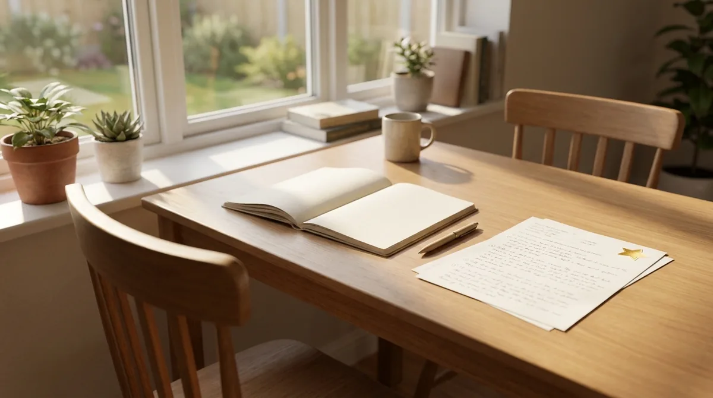
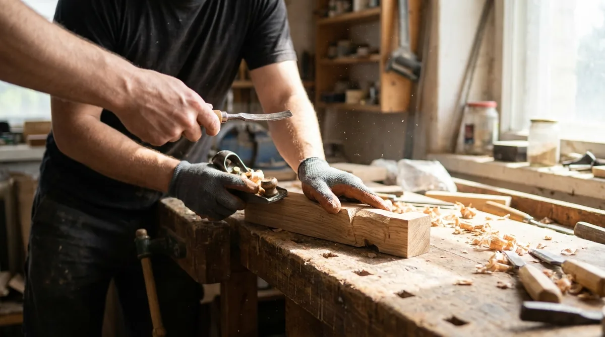

Estudar com a IA do lado
Um gênio na cadeira ao lado resolve todas as provas por você. O boletim fecha em dez e o aprendizado fica em zero. Este episódio combina o jeito de usar a mesma ferramenta sem cair nisso.
Como acompanhar. Quando o áudio pedir, aperte Próximo. Na tela da prática, pause o áudio, resolva e volte. Sem a página aberta dá pra ouvir tudo, sem perder nada.

Fornecedor ou professor.
Recebe um pedido, devolve um produto. A tarefa fica pronta e quem pediu sabe o mesmo que sabia antes.
Recebe uma dúvida, devolve entendimento. Demora mais, e o que sobra fica em você.
É a academia: se outra pessoa levanta o peso, o peso sobe de verdade e ninguém trapaceou. Só que o músculo que cresce não é o seu. Chamar o fornecedor não é errado quando a meta é só entregar. O que estraga é chamar ele bem na hora em que a meta era aprender.
Três regras pra manter ela na cadeira de professor.
-
1
Explicação antes do código. Se o bloco pronto chega primeiro, a explicação vira legenda de uma coisa que você já aceitou, e ninguém lê legenda.
-
2
Digitar em vez de colar. Colar leva dois segundos e não gera nenhuma pergunta. Digitar leva dois minutos e obriga a ler cada pedaço. É na lentidão que a dúvida nasce.
-
3
Dizer o que espera antes de rodar. Se a previsão falha, você achou o ponto exato em que seu entendimento estava errado. Quem roda primeiro perde essa informação pra sempre.
As três custam tempo, e esse é o preço combinado.
O mesmo pedido, dois jeitos
A frase que vira a chave sozinha, no fim do pedido: "não me mostre o código ainda".
Quatro momentos em que ela ajuda de verdade.
Repare no que os quatro têm em comum: você continua no comando. Já tentou, já escreveu, já errou ou já sabe o que quer. Ela entra depois.

Três coisas que atrapalham quem está aprendendo.
É o GPS: ele te leva a qualquer endereço de primeira, e depois de dez viagens você não sabe ir sozinho. Ninguém precisa jogar o GPS fora. A ordem é que importa: depois da tentativa ela ensina, antes dela ela substitui.
Reescreva um pedido
A pergunta de ouro pra conferir: a resposta que esse pedido vai puxar é algo pra colar ou algo pra estudar? Se dá pra colar, ainda é fornecedor. Curto demais volta com código; longo demais vira aula que você não pediu.
Sem uma linha de código, de propósito.
Fornecedor entrega o produto e não deixa nada; professor demora mais e deixa. As três regras: explicação antes do código, digitar em vez de colar, prever antes de rodar. Ela ajuda quando vem depois da tentativa e atrapalha quando vem antes.
O que transfere: o método não é sobre Java. Vale pra aprender qualquer linguagem, qualquer banco e qualquer ferramenta nova. Explicação antes do produto, mão no teclado, previsão antes de executar.
A mão vai pro teclado pela primeira vez. Mas antes da primeira linha, a série passa por onde o código é escrito, e por que o programa pesado que quase todo curso manda instalar no primeiro dia não vai ser usado aqui.
Ver a série →Fica a provocação: se a gente terceirizar todo esforço de resolver quebra-cabeça lógico, o que sobra da nossa capacidade de lidar com a frustração e ligar os pontos na vida real?